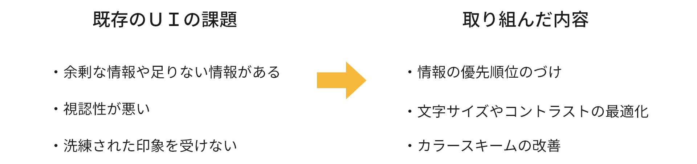
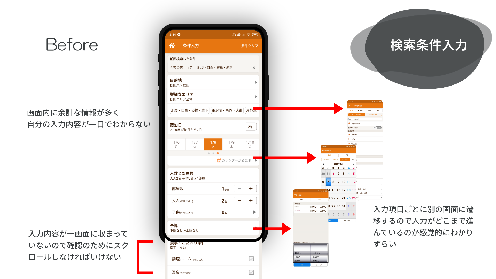
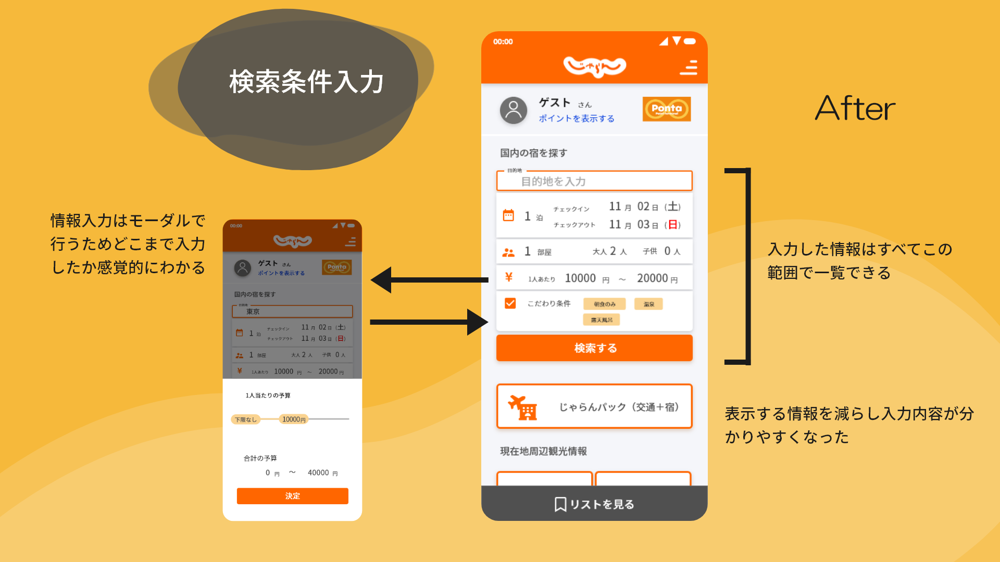
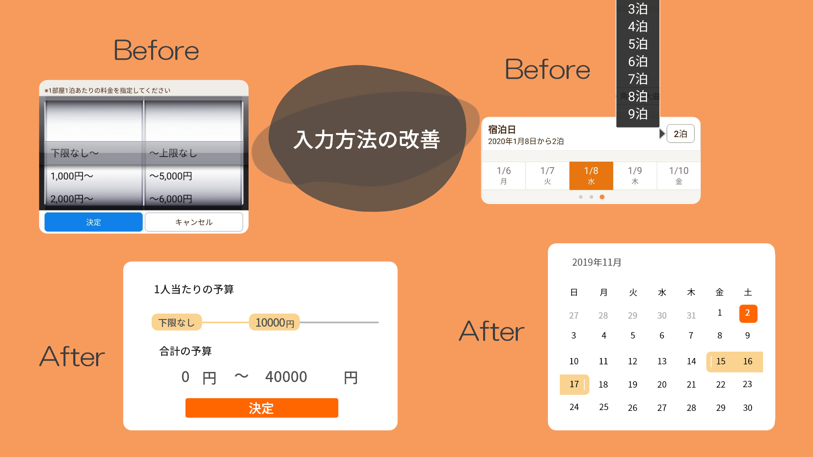
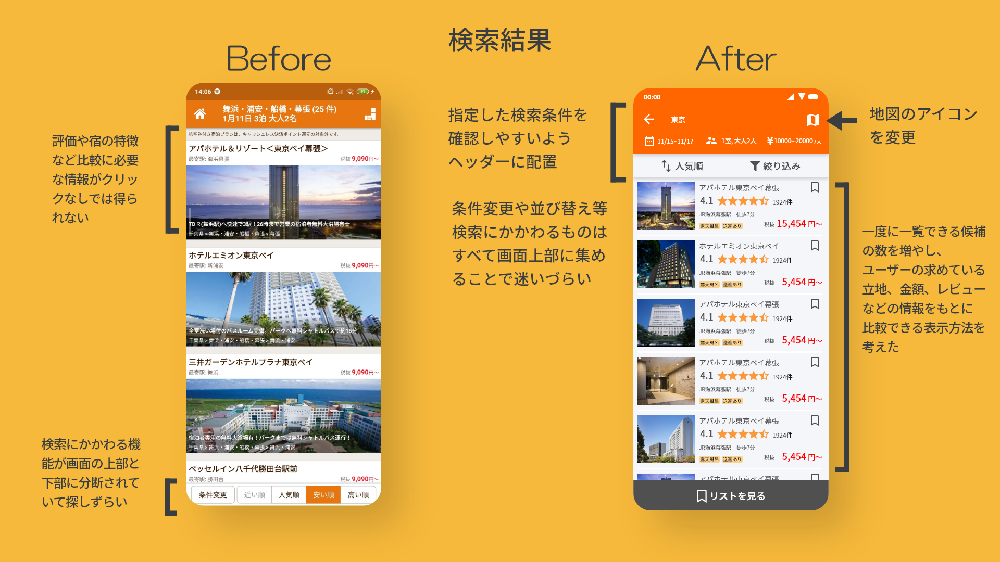
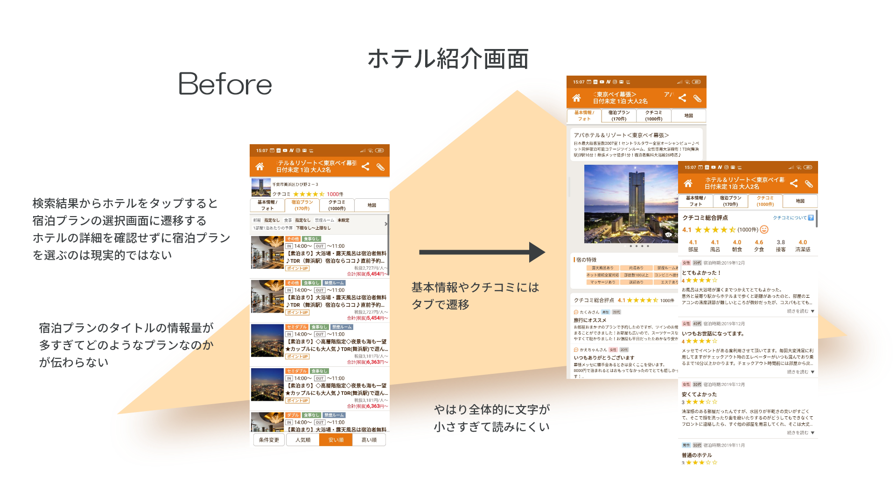
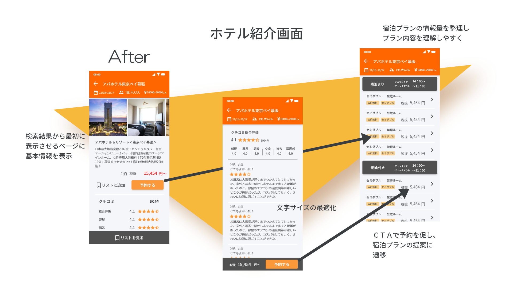

じゃらんは日本国内では最も使用されているホテル予約サイトの一つである。今回は練習としてじゃらんandroid用アプリの宿検索機能のリデザインを行った。製作期間は4日間でプロトタイピングまでを行った。使用ツールは Adobe Xd と photoshop。
まずリデザインの方向性を確認するため、ホテル予約サイトの業界リサーチを行った。
日本国内でホテル予約サービスの2強といわれているのが、楽天トラベルとじゃらんである。
楽天トラベルはビジネス層に向けた多サービスとの連携で当該層から支持を受けている。対してじゃらんのユーザー層は男女年齢問わずバランスよく分布している。また月間のアクティブユーザー数が比較的多く、観光旅行目的で使用するユーザーからの根強い支持があることが分かった。
そのため今回のリデザインのゴールは「レジャー目的の検索ユーザビリティを上げる」ことと設定した。
情報設計を行うため、じゃらんで観光先の宿を探すユーザーがどのような情報を求め、その情報をどのように利用するかを考えた。まずホテルを決定するにあたり必要な情報はエリア、期間、部屋数、人数、予算、部屋の形式や施設などの条件である。これらの情報は検索を行うユーザーが事前に前提として持っており入力する情報である。次にユーザーが事前に持っていない情報、探している情報はそれぞれの宿の立地、金額、レビュー、オプションなどである。ユーザーはそれぞれの宿のこれらの情報を比較して泊まる宿を決める。
つまりユーザーの希望を入力しやすく、得られた情報を比較しやすいUIが望ましい。
またグラフィックの面では旅行を計画している人がより明るく楽しい気分を感じられるUIを目指した。
今回リデザインを行ったじゃらんの検索機能は主に3つの部分から成る。まず、ホーム画面から検索機能を利用しユーザーが任意の目的地、日程、人数、予算などを入力する。次に、ユーザーの入力に従い検索結果の一覧が表示される。最後に、検索結果からユーザーが選んだ宿の詳細を表示する画面が現れる。ここからさらにユーザーはプランを選び、予約手続きに進むことができる。 今回は検索画面、検索結果表示画面、ホテルの詳細表示画面の３ステップをリデザインした。
現行のホーム画面を見てみると、キーワード検索の窓のほかに大きなボタンがいくつか並んでいる。しかし、画面上部にある二つのボタンと検索窓はすべて宿の検索という一つの機能へとリンクしている。そこでホーム画面に検索条件入力機能を追加し、アプリ起動から検索までの１ステップを減らすことを考えた。
また現行のホーム画面には背景画像が入っており文字が見にくくなっているため、リデザインでは背景画像を廃止した。
次に検索条件入力画面を見てみる。
現行のUIの検索条件入力画面は縦にかなり長く、アスペクト比19：9の縦長スマホでも一画面に収まらない。しかし実際にユーザーがここで入力する内容は目的地、日程、人数、予算、その他の条件の5項目のみであり、画面上には余計な情報が多くあることがわかる。さらに5つの各項目の入力時には別の画面に遷移するため、合計でいくつの項目の入力が必要で、いくつの項目まで入力が完了しているのかが直感的にはわからないようになっている。
そこで、今回のリデザインでは5項目の選択内容のみを画面に表示し、入力はモーダルで行うことにした。これによりユーザーは自分の選択を一目で確認でき、どの項目に入力を行っているのか常に把握できるようになる。

さらに入力方法の改善も行った。
現行ＵＩの予算指定は上限と下限をそれぞれダイヤルで選ぶようになっているが、リデザインでは同一直線上のスライダーを動かすことで選択できるようにした。これにより選択がより素早くなるだけでなく有効となっている価格の範囲が可視化される。
また、現行ＵＩの日程指定は特定の日付を選び期間を選ぶようになっている（「１月１３日から２泊」など）。しかしこれではチェックアウト日が何日かわかりずらくなるため、リデザインではカレンダー上でスライダー選ぶ方法を採用した。
次に検索結果の表示画面を見てみる。
現行ＵＩの検索結果表示画面のヘッダーにはユーザーが指定した目的地、日付、人数が表示されている。その下には検索結果が一覧表示されている。検索結果一覧にはホテル名、価格、立地などの情報が表示されているが、レビューやホテルの特徴等の情報は表示されていない。また縦長画面のスマホでもスクロールなしでは検索結果は３つまでしか表示されず比較がしずらい。さらに選択された検索条件はヘッダーに表示されているのにかかわらず、検索条件の変更や並び替えなどの機能が画面の下部に配置されており、検索条件にかかわる機能が画面の上部と下部に分断されているため迷いやすくなっている。
リデザインでは検索結果表示部分にレビューやホテルの特徴を追加しホテルの詳細ページに行かなくてもより多くの情報をもとに判断できるようにした。またこの画面で写真はホテルの大まかな印象を伝えることが目的であり、サイズを少し落としても問題がないと考え、より多くの検索結果を一画面に表示できるよう調整した。また、気になる宿をリストに簡単に追加しておきあとでまとめて比較できるよう、画面下部からリスト機能へ移れるようにした。
検索にかかわる機能はすべて画面上部にまとめアクセスしやすくした。
最後にホテル紹介画面を見ていく。
現行ＵＩで検索結果からホテルをタップすると宿泊プランの選択画面に遷移する。しかし、ユーザーがホテルの基本情報を確認せずに宿泊プランを選択して予約に進むことは現実的ではない。また宿泊プランのタイトルに情報が羅列されており、プラン内容が一目でわからない。

そこでリデザイン案では検索結果から最初に表示するページはホテルの基本情報ページに変更し、そこからレビューや地図などの機能へリンクするように変更した。
また現行ＵＩではタブによる切替で基本情報、プラン、レビュー、地図などの情報を切り替えることになっている。しかし、地図やレビューなどは頻繁に切り替えて使う機能というよりも、宿の選択のために確認するためのページであるためタブのような常駐のエレメントに割り当てるのではなく、適切な call to action を用いてユーザーを誘導するほうが効果的と考えたため廃止した。
今回のリデザイン案のＵＩにふさわしい色使いとなるよう使用カラーを変更した。
じゃらんのブランドカラーであるオレンジをメインカラーとして３種類の濃度のカラーを使用した。最も濃いオレンジはじゃらんのロゴで使用されている色をそのままメインカラーとして使用し、それに合わせて二色のサブカラーを調整した。
全体的に現行のＵＩより明るくビビットな色を使用し、旅行に出かけるユーザーによりわくわくしてもらえるような色使いを心掛けた。
最後に今回のデザインのプロセスを紹介したい。
今回のＵＩリデザインに取り掛かる前にじゃらんのＵＩを研究したうえで、各画面でユーザーが求めるもの情報とサービス側が求める情報をリストアップした。
例えば宿の検索条件入力画面ではサービス側がエリア、日程、部屋数、人数、予算、そしてそのオプションなどを求めている。ここではユーザーは自分の持っている情報（希望）を記入していく。一方、検索結果画面ではユーザーは立地、日程、金額、オプションなどが希望に合致しているかを確認し、レビューなどをもとに各ホテルを比較することをもとめている。サービス側はそれらの情報を過不足なくわかりやすいフォーマットで伝えなければいけない
以上のように一度各画面に必要な情報をリスト化することによって、UIのエレメントベースではなくより抜本的な情報設計ができた。
今回のリデザイン案を三人のユーザーにテストしてもらったところ現行のものより使いやすいという意見をもらうことができた。今回は４日間という限られた期間だったため検索機能のみのリデザインを行ったが実際のデザインプロセスではより広い視野が必要になってくる。例えばアプリ全体のリデザインであれば宿検索より観光地検索のほうが優先順位が高いという結論に至り、また違ったホーム画面のデザインになったかもしれない。 ただ間違いなく今回のリデザインはミクロな視点を持ってＵＩを見る非常に有益な練習となった。
下記リンクから今回のリデザイン案のプロトタイプを参照可能。
Test the prototype